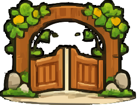
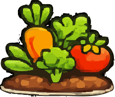
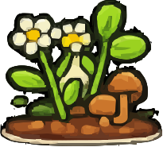
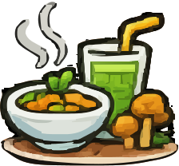
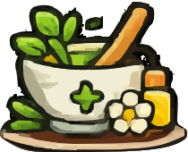
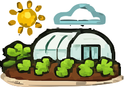

<aside class="sidebar" data-collapsed="0">
<button aria-label="Abrir/fechar menu" class="sidebar-toggle" data-tooltip="Menu" title="Menu" type="button"><span class="toggle-icon">☰</span><span class="toggle-label">Menu</span></button>
<nav aria-label="Menu principal" class="sidebar-nav">
<!-- ===== ATALHOS (aparecem no modo recolhido) ===== -->
<a class="nav-item" data-quick="1" data-route="index.html" data-tooltip="Início" href="index.html" title="Início">
<span aria-hidden="true" class="icon">
  
</span>
<span class="label">Início</span>
</a>
<a class="nav-item" data-quick="1" data-route="index_cultivadas.html" data-tooltip="Plantas cultivadas" href="index_cultivadas.html" title="Plantas cultivadas">
<span aria-hidden="true" class="icon">
  
</span>
<span class="label">Plantas cultivadas</span>
</a>
<a class="nav-item" data-quick="1" data-route="index_espontaneas.html" data-tooltip="Plantas espontâneas" href="index_espontaneas.html" title="Plantas espontâneas">
<span aria-hidden="true" class="icon">
  
</span>
<span class="label">Plantas espontâneas</span>
</a>
<a class="nav-item" data-quick="1" data-route="data/refeicoes.html" data-tooltip="Receitas" href="data/refeicoes.html" title="Receitas">
<span aria-hidden="true" class="icon">
  
</span>
<span class="label">Receitas</span>
</a>
<div aria-hidden="true" class="nav-sep"></div>
<!-- ===== RESTO DO MENU (só aparece expandido) ===== -->
<a class="nav-item" data-route="index_medicinais.html" data-tooltip="Farmácia do campo" href="index_medicinais.html" title="Farmácia do campo">
<span aria-hidden="true" class="icon">
  
</span>
<span class="label">Farmácia do campo</span>
</a>
<a class="nav-item" data-route="" data-tooltip="Videoteca" href="index_videoteca.html" title="Videoteca">
<span aria-hidden="true" class="icon">
  
</span>
<span class="label">Videoteca</span>
</a>
<a class="nav-item" data-route="" data-tooltip="Horta (apresentação)" href="apresentacao.html" title="Horta (apresentação)">
<span aria-hidden="true" class="icon">
  
</span>
<span class="label">Horta (apresentação)</span>
</a>
<a class="nav-item" data-route="" data-tooltip="Contactos" href="contactos.html" title="Contactos">
<span aria-hidden="true" class="icon">
  
</span>
<span class="label">Contactos</span>
</a>
</nav>
</aside>
